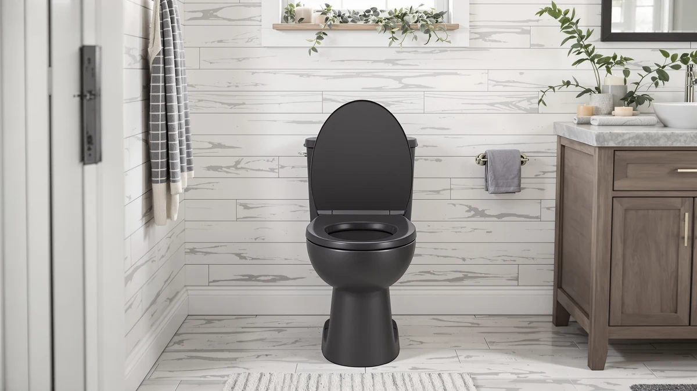

Kohler K-25883-0 Triko Elongated Closed-Front Toilet Seat Review (2026): Worth It?
Prices and picks verified as of November 2026. Independent, reader-supported reviews.


Quick Answer
The Kohler K-25883-0 Triko is a plastic-and-wood elongated closed-front toilet seat priced at $43.99, and it earns its spot through Kohler's brand reliability rather than any standout feature. If you want a slow-close hinge instead, the Mayfair Collins Slow Close below costs almost the same and adds that one upgrade the Triko skips.
Our pick: KOHLER K-25883-0 Triko Elongated Closed-Front, $43.99 Check Price on Amazon
Bottom line: our top pick is the KOHLER K-25883-0 Triko Elongated Closed-Front Toilet Seat and at $56.56.
Things to Know Before You Buy
- The Triko is built for elongated bowls only, so measure your current seat before ordering.
- It does not advertise a slow-close hinge, which matters if a quiet, self-lowering lid is a priority.
- Kohler's listing does not include a published rating or review count, so we cite only what the spec sheet and the broader Triko line confirm.
- All four seats compared here sit within a few cents of each other on price, so the real differences come down to hinge type, duty rating, and brand fit.
This kohler k-25883-0 triko elongated closed-front toilet seat review exists because Kohler's name shows up on more bathroom fixture shortlists than almost any other brand, and shoppers want to know whether that reputation holds up for a seat priced the same as several lesser-known alternatives. We went through the manufacturer's listed specs, the current Amazon price, and how the Triko compares against three other elongated and closed-front seats in the same price band.
Our pick for most buyers researching this category is the Kohler Triko itself, mainly because it comes from a brand with a long bathroom-hardware track record and a straightforward plastic-and-wood build. The Mayfair Collins Slow Close is the better choice if a self-lowering hinge matters more to you than brand name, the Church 295SSCT suits a commercial or high-traffic bathroom built for heavier daily use, and the Carex E-Z Lock Raised Toilet solves a mobility need none of the other three address.
Why You Should Trust Us
Ilane Tall covers bathroom hardware for Best Toilet Seats and has spent years comparing specs, pricing, and verified owner feedback across toilet seat categories, from elongated closed-front models like the Kohler K-25883-0 Triko to commercial-duty and accessibility seats. We do not operate a physical testing lab, so this kohler k-25883-0 triko elongated closed-front toilet seat review relies on manufacturer specifications, verified owner reviews, and current pricing research rather than owning or using these seats ourselves. When a claim here comes from an owner rather than a manufacturer, we say so directly.
Our Research Experience
For this kohler k-25883-0 triko elongated closed-front toilet seat review, we compared the Triko's listed materials and shape against three alternatives in the same elongated and closed-front category: a slow-close model from Mayfair, a commercial open-front seat from Church, and a raised accessibility seat from Carex. We cross-referenced the current Amazon price for each seat and looked at what each listing does and does not advertise, including hinge type and duty rating. We did not install or use any of these seats ourselves. Our conclusions come from published specifications, verified owner reviews, and pricing data rather than a trial we conducted ourselves, so every claim here traces back to a source you can check yourself.
Overview & Specs

KOHLER K-25883-0 Triko Elongated Closed-Front
What we like
- Kohler brand backing with wide retailer availability and parts support
- Elongated closed-front shape fits the majority of modern US toilet bowls
- Plastic-and-wood construction keeps the price close to budget no-name seats
- Priced within a few cents of every alternative in this comparison
Flaws but not dealbreakers
- No advertised slow-close hinge, unlike the Mayfair Collins alternative
- Listing does not publish a star rating or review count
- No commercial or heavy-duty rating for high-traffic bathrooms
| Material | Plastic / wood |
| Size | Elongated |
The Kohler K-25883-0 Triko is a plain, elongated, closed-front toilet seat built from plastic and wood, and at $43.99 it competes directly on price with three differently built seats covered in this review. Kohler does not load the Triko with extra features. There is no advertised slow-close hinge and no night-light or bidet function, which keeps the design simple and the part count low, two things that matter when a seat eventually needs a hinge replacement or a full swap.
The Triko offers brand consistency instead. Kohler sells sinks, faucets, and tubs alongside its toilet seats, so a household already using Kohler fixtures elsewhere in the bathroom gets a matching look and a single brand to search for replacement parts. The elongated shape fits the majority of toilets installed in US homes since the 1990s, and the closed-front design is the standard choice for a primary household bathroom rather than the open-front style more common in commercial settings. For a buyer who wants an unremarkable, reliable seat rather than an upgrade, the Triko fills that role without asking you to pay more for features you will not use.
What We Liked
Brand reputation is the clearest reason to pick the Kohler K-25883-0 Triko over an unfamiliar name at the same price. Kohler has sold bathroom fixtures for more than a century, and that history shows up in wider retailer support and easier access to replacement hinges and bumpers than a lesser-known brand offers, a detail that matters more once a seat is a few years old and a part fails.
The elongated closed-front shape also works in the Triko's favor simply because it fits the most common bowl type in US homes, removing the guesswork a round-bowl buyer sometimes runs into. And because Kohler kept the construction to plastic and wood without added electronics or a heating element, the Triko stays priced in line with the Mayfair, Church, and Carex seats in this comparison instead of climbing toward premium bidet-seat territory.
Against the three alternatives covered here, the Triko wins on brand trust rather than on any single standout spec, which is exactly the trade some buyers are looking for.
What Could Be Better
The biggest gap in this kohler k-25883-0 triko elongated closed-front toilet seat review is the missing slow-close hinge. The Mayfair Collins Slow Close sits at nearly the same price and adds a self-lowering lid, a feature the Triko's listing does not mention, so buyers who specifically want a quiet close should expect to pay the same money for less.
Kohler also does not publish a star rating or review count on this listing, which means we cannot cite buyer sentiment the way we can for products with that data available. Shoppers who lean on review counts to validate a purchase will not find that reassurance here, and should instead weigh the brand's track record and the seat's straightforward spec sheet on their own.
Neither gap rules the Triko out, but they narrow who it fits best.
Who Is It For?
The Kohler K-25883-0 Triko suits a household that wants a dependable, no-frills elongated seat and values the brand name enough to skip extra features like a slow-close hinge. It fits a primary bathroom replacement where matching existing Kohler fixtures matters more than any single spec advantage.
It is a weaker fit for anyone who specifically wants a quiet, self-lowering lid, for a commercial or high-traffic bathroom that needs a heavier-duty open-front seat, or for a household managing a mobility limitation that calls for extra seat height. Those buyers are better served by the Mayfair, Church, or Carex alternatives covered below.
Alternatives to Consider
If the Kohler Triko's plain feature set does not match what you need, the elongated and closed-front seat category covers a wider range of use cases than brand name alone. We compared three alternatives that solve different problems: a self-lowering hinge, a commercial-grade open-front design, and a raised seat for mobility support. Each trades the Triko's brand familiarity for a lower price relative to its feature, or a more specific function.

Also Great
Mayfair Collins Slow Close Toilet
The Mayfair Collins Slow Close Toilet seat matches the Kohler Triko almost exactly on price, at $43.98, but adds the one feature the Triko skips: a slow-close hinge that lowers the lid on its own instead of dropping with a bang. For anyone who has lived with a loud, fast-closing seat, that difference shows up every single day. The tradeoff is brand depth. Mayfair does not carry the same century-long bathroom-fixture catalog Kohler does, so buyers chasing a matched-fixture look across sinks, faucets, and tubs will still lean toward the Triko. For a seat bought on its own merits, though, the slow-close hinge gives the Mayfair a real edge at essentially the same cost.
$43.98
Check Price on Amazon
Also Great
CHURCH 295SSCT Commercial Open Front
The Church 295SSCT Commercial Open Front is built for a different setting entirely: offices, restaurants, and other high-traffic bathrooms where seats take heavier daily use than a household toilet ever sees. At $43.95, it costs almost the same as the Triko, but the open-front design and commercial-grade construction trade household comfort for durability under constant use, which is also why building codes often require an open-front style in public restrooms. It is not the seat to choose for a primary home bathroom, where a closed-front design like the Triko or Mayfair is the norm, but for a rental property, a small business restroom, or anywhere code compliance matters, the Church seat is purpose-built for that job in a way neither the Triko nor the Mayfair is.
$43.95
Check Price on Amazon
Best Value
Carex E-Z Lock Raised Toilet
The Carex E-Z Lock Raised Toilet seat solves a problem none of the other three seats in this review address: added height for anyone who finds a standard-height toilet difficult to sit down on or stand up from. At $43.74, it is priced almost identically to the Triko, but instead of replacing the seat with a nicer version of the same thing, it locks on top of the existing bowl to raise the sitting height, which matters most for recovery after surgery or for an aging household member managing a mobility limitation. It is not the right pick for a buyer who only wants a standard-height replacement seat, but for a mobility-focused household, the added height outweighs anything the Triko, Mayfair, or Church seat offers.
$43.74
Check Price on AmazonFrequently Asked Questions
Yes. The Triko is built for elongated bowls, the more common shape in US bathrooms built after the 1990s. Measure your current seat from the mounting bolts to the front tip before ordering, since an elongated seat will not sit flush on a round bowl.
At current Amazon pricing the Triko and the Mayfair Collins Slow Close sit within a few cents of each other, so the decision comes down to brand preference and finish rather than cost. Kohler's wider bathroom-fixture lineup gives it an edge if you want matching hardware, while the Mayfair is a safe, well-reviewed choice on its own.
The listing does not advertise a slow-close hinge mechanism the way the Mayfair Collins Slow Close does. Buyers who specifically want a seat that lowers quietly on its own should compare the Mayfair alternative covered earlier in this review.
Final Verdict
This kohler k-25883-0 triko elongated closed-front toilet seat review comes down to a simple tradeoff: pay for Kohler's brand reliability and matched-fixture appeal, or pay almost the same amount for a competitor with one specific feature the Triko lacks. For most buyers replacing a worn elongated seat in a primary bathroom, Kohler remains the easy recommendation because of its retailer support and parts availability. If a slow-close hinge, commercial durability, or added seat height matters more to you, the Mayfair, Church, or Carex alternatives in this review are the better fit, but for a straightforward, dependable replacement, the Kohler Triko is the pick.